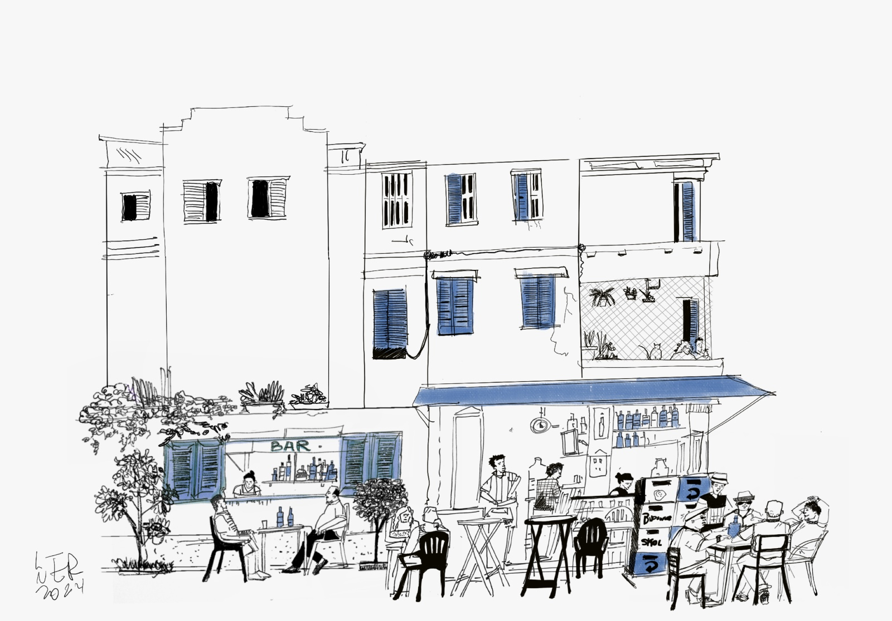
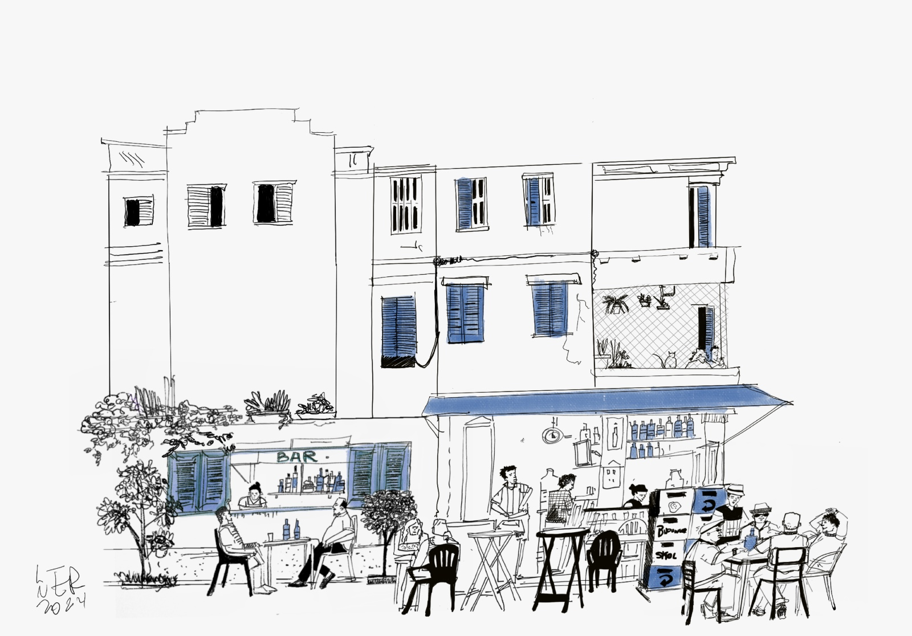

Sobre Mim
Artista, Ilustrador e pintor. Advogado de formação e estudante de arquitetura Gabriel Lerner trabalha com multimeios artísticos encarando seu trabalho como uma forma de registrar a sua própria trajetória. Os trabalhos aqui expostos foram originalmente desenhados in loco através de croquis rápidos de traço furioso, e posteriormente digitalmente finalizados para ganharem novas cores.

 
